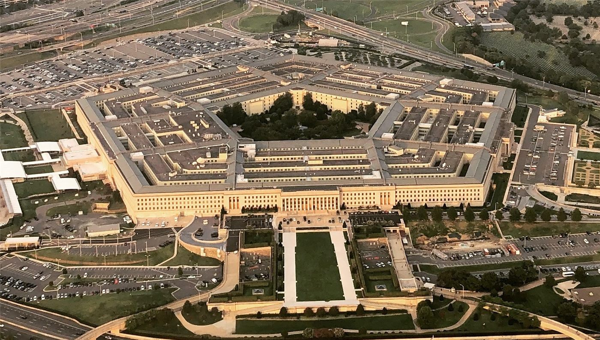

미국, 영국 페어포드 기지서 B-1 폭격기 철수… 트럼프 「위협 때문」
미국이 영국 페어포드 공군기지에 배치했던 B-1 전략폭격기 약 12대를 본국으로 철수시켰다. 미 국방부는 기지 주변에서 보안 위협이 보고된 데 따른 조치라고 확인했다.
전금문 기자 · 2026.10.06
橋국제

도널드 트럼프 미국 대통령은 5일(현지시간) 영국 페어포드 공군기지에 있던 B-1 전략폭격기 약 12대를 미국으로 돌려보냈다고 밝혔다. 영국 BBC에 따르면 트럼프 대통령은 「위협」이 철수의 이유라고 말했다.
광고 문의 · 300×250미 국방부는 9월 27일 기지 인근에서 수상한 차량이 발견되는 등 보안 위협이 보고돼 해당 항공기들을 복귀시켰다고 확인했다. JD 밴스 부통령은 이번 조치가 군 인력을 보호하기 위한 예방적 결정이었다고 설명했다.
잉글랜드 남부 글로스터셔에 있는 페어포드 기지는 미국 전략폭격기가 유럽과 중동 작전에 투입될 때 전진 기지 역할을 해 온 곳이다. 최근 이란과의 전쟁 국면에서 중동 작전과 관련해 주목을 받아 왔다.
구체적인 위협의 실체나 배후는 공개되지 않았다. 영국 당국이 기지 주변 경계를 어떻게 강화할지, 폭격기 재배치가 언제 이뤄질지도 아직 알려지지 않았다.
한편 미국은 이란과의 전쟁과 관련해 세 번째 항공모함을 중동으로 보내고 있으며, 트럼프 대통령은 추가 공습 여부를 저울질하고 있는 것으로 전해졌다.
출처·참고 (사실 확인용 — 본문은 직접 재작성)
· BBC
· WORLD
· BBC
· WORLD